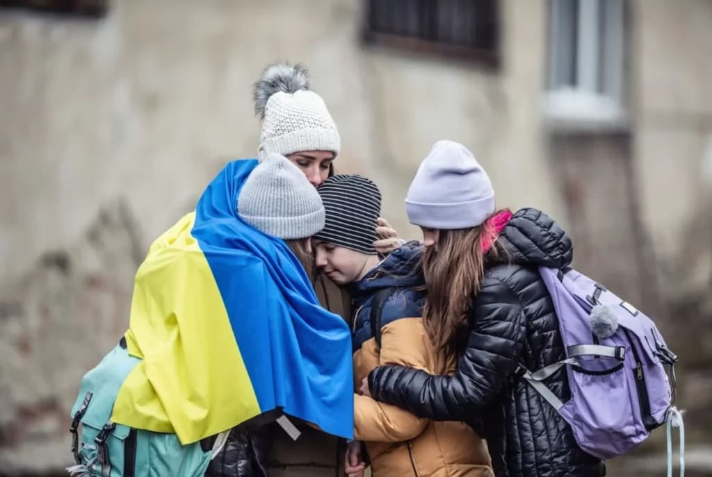
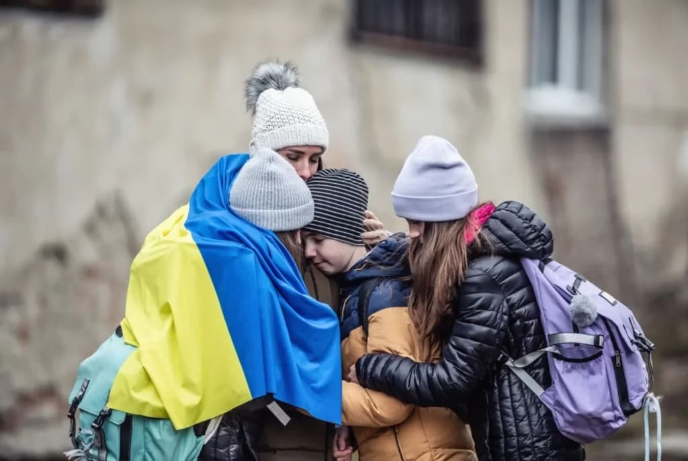

Фонд підтримки постраждалих від війни
Ми хочемо допомогти кожному, хто постраждав під час війни
Ми – фонд підтримки постраждалих від війни
Наша мета – психологічна та гуманітарна допомога українцям
Кожен, хто звернеться, отримає допомогу, яка у наших силах
Реабілітаційний центр
Ми допомагаємо людям, які постраждали знайти правильне лікування. У нашому фонді є чотири напрями: фізичної та реабілітаційної медицини, терапевтичне, неврологічне та хірургічне. Ми маємо заклади-партнери, де швидко та якісно можуть надати допомогу.
Робота з дітьми
Діти – найвразливіша частина суспільства, і їм особливо потрібна підтримка дорослих. Тому наш фонд збирає речі для дітей, проводить літні й зимові табори, майстер-класи та за потреби – дитячих прсихотерапевтів.
Наша місія – щоб кожен українець мав можливість отримати допомогу й не залишився наодинці зі своїми проблемами
Підтримайте нашу роботу!
Усі ваші донати йдуть саме на роботу фонду, заробітні плати ми виплачуємо з коштів грантодавців